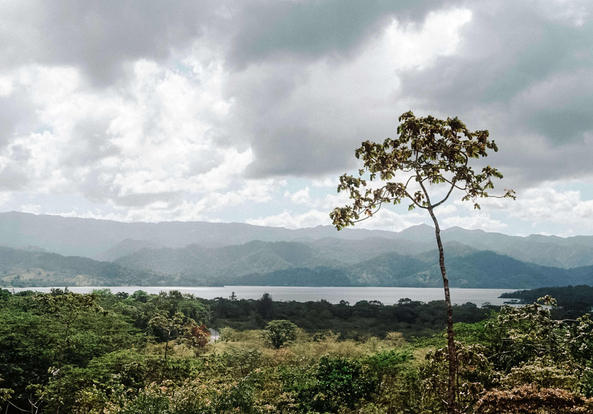

Best Time to Visit La Fortuna & Arenal Volcano
When is it sunny? When is it cheaper? Discover the perfect month for your trip.

One of the most frequent questions from travelers is: When is the best time to visit La Fortuna? The answer depends on what you prefer: clear blue skies with crowds, or lush green landscapes with lower prices.
Dry Season: December to April
This is considered the High Season in Costa Rica. During these months, you have the best chance of seeing the Arenal Volcano without any clouds covering its peak.
- Pros: Sunny days, perfect for hiking and the waterfall.
- Cons: Highest prices for hotels and more crowds at the hot springs.
- Tip: Book at least 3 months in advance for Christmas and Easter week.
Green Season: May to November
Don't let the name "Rainy Season" scare you. In La Fortuna, it usually rains in the afternoon or evening, leaving the mornings perfect for activities.
Why we love the Green Season:
- Lush Nature: The rainforest turns an incredible bright green.
- Lower Prices: Many hotels offer "Green Season" discounts.
- Fewer People: You might have a whole hot spring pool for yourself!
Quick Weather Breakdown by Month
| Months | Weather | Tourism Level |
|---|---|---|
| Jan - March | Dry & Sunny | Very High |
| April - June | Humid / Light Rain | Moderate |
| July - Aug | Little Summer | High |
| Sept - Nov | Rainy | Low (Best prices) |
Volcano Visibility Tip
The Arenal Volcano is notoriously shy. Even in the dry season, it can be covered in clouds. Our local secret: Wake up at 6:00 AM! The volcano is most likely to be clear in the early morning before the heat creates clouds around its peak.